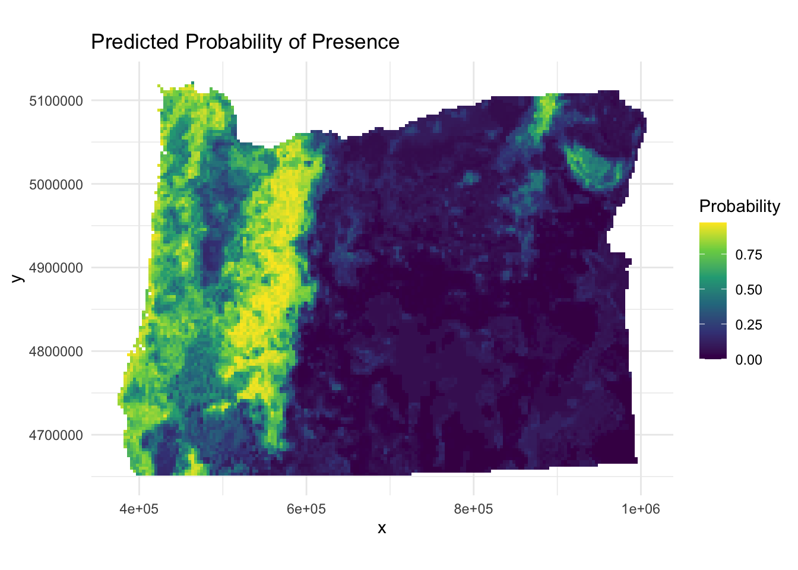
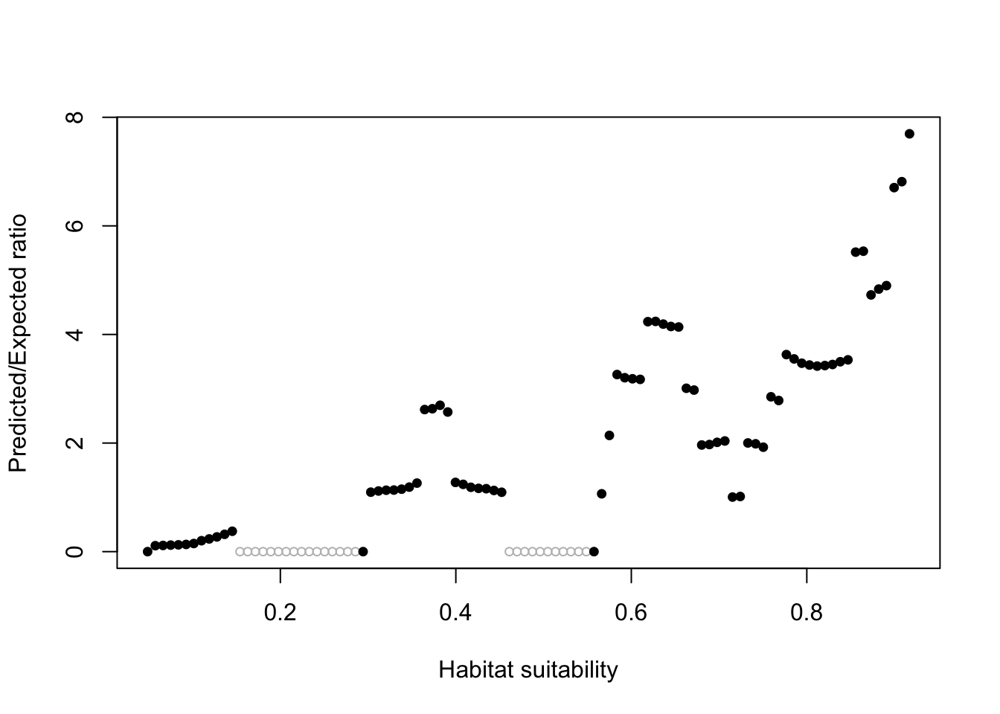
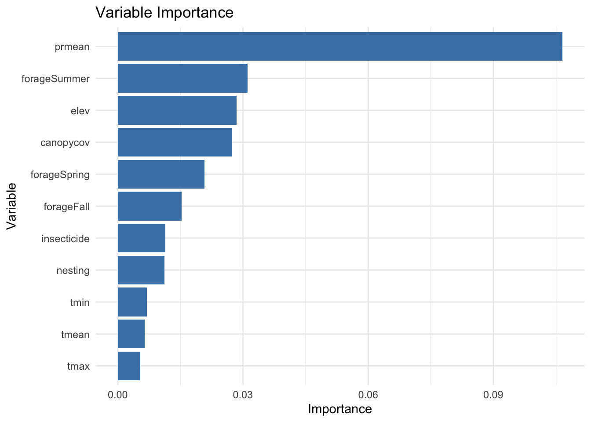
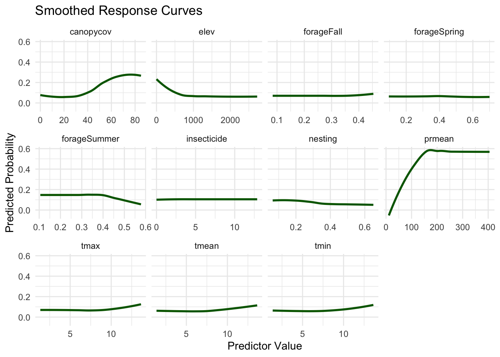

# Load presence-background data and rename target variable
pb <- readRDS("data/presback.rds") %>%
rename(presence = B_sitkensis)
# Convert presence column to a factor (required for classification)
pb$presence <- as.factor(pb$presence)
# Create a train/test split (80% train, 20% test) stratified by presence
set.seed(123)
data_split <- initial_split(pb, prop = 0.8, strata = presence)
train_data <- training(data_split)
test_data <- testing(data_split)Species Distribution Model with Random Forest
Overview
In this module, you’ll build and evaluate a species distribution model for Bombus sitkensis using a Random Forest algorithm. You’ll also generate spatial predictions, evaluate model performance, and visualize variable importance and response curves.
0. QUICK Niche Theory Refresher
Today, we will be focusing on Abiotic (A) and Biotic (B) factors, but we will not incorporate Movement (M). Movement and the accessible area is a key component to building species distribution models and should be addressed thoughtfully. For speed and computational reasons, we will not be fitting our models using occurrence records from throughout the species range, but when possible, SDMs should be fit using data from throughout a species’ entire native range.
1. Read and prepare data
We’ll load the presence/background dataset and rename the response variable. Then we’ll split the data into training (80%) and testing (20%) sets, stratified by presence.
2. Plot spatial extent and points
We’ll visualize the training and test points over the study area (Oregon) for context.
# Load raster for projection reference
tmean_yr <- rast("data/tmean_yr.tif")
# Load map of Oregon using rnaturalearth, transform to raster CRS
or <- ne_states(country = "United States of America", returnclass = "sf") %>%
st_transform(st_crs(tmean_yr)) %>%
filter(name == "Oregon")
# Visualize training and testing data points on the map
# Blue = training, Gold = testing
ggplot() +
geom_sf(data = or, fill = NA) +
geom_point(data = train_data, aes(x = x, y = y), color = "blue") +
geom_point(data = test_data, aes(x = x, y = y), color = "gold") +
theme_minimal() +
labs(title = "Training and Test Points", x = "Longitude", y = "Latitude")3. Preprocessing recipe
We’ll create a tidymodels recipe that defines the model formula and normalization of predictors.
In tidymodels, a ‘recipe’ is a structured sequence of preprocessing steps applied to data before modeling. It allows users to define transformations (e.g., normalization, encoding, imputation) in a reproducible way. Recipes separate data preparation from model fitting, ensuring consistent preprocessing across training and test sets. Here we include normalization of predictors, which scales variables so that they are on comparable ranges.
# Define modeling recipe specifying predictors and target variable
rf_recipe <- recipe(presence ~ prmean + tmean + elev +
canopycov + forageFall + forageSpring +
forageSummer + nesting + insecticide,
data = train_data) %>%
step_normalize(all_predictors()) # Normalize predictors (optional for RF)4. Model specification
We define a Random Forest model and specify parameters (mtry, min_n) for tuning. The engine ranger is fast and supports permutation-based variable importance.
# Define a Random Forest model using the parsnip package
# 'tune()' allows tuning of hyperparameters during cross-validation
rf_model <- rand_forest(
mtry = tune(),
min_n = tune(),
trees = 500
) %>%
set_engine("ranger", importance = "permutation") %>% # model engine specifies that the method of estimation, which is the ranger package
set_mode("classification")5. Workflow and tuning
We’ll combine the recipe and model into a workflow, then use 5-fold cross-validation to tune parameters.
This step will take a few minutes to process.
# Combine recipe and model into a single workflow
rf_workflow <- workflow() %>%
add_model(rf_model) %>%
add_recipe(rf_recipe)
# Create 5-fold cross-validation folds
set.seed(234)
cv_folds <- vfold_cv(train_data, v = 5, strata = presence)
# Define random grid for hyperparameter tuning
# 'mtry' controls how many predictors are randomly selected at each tree split — smaller values increase randomness.
# 'min_n' sets the minimum number of observations in a terminal node (a smaller value allows deeper trees).
# Tuning these parameters helps balance model complexity and generalization.
rf_grid <- grid_random(
mtry(range = c(1, 9)),
min_n(range = c(5, 20)),
size = 10
)
# Tune the model using ROC AUC as performance metric
set.seed(345)
tuned_rf <- tune_grid(
rf_workflow,
resamples = cv_folds,
grid = rf_grid,
metrics = metric_set(roc_auc),
control = control_grid(save_pred = TRUE)
)
# Select best parameters by highest ROC AUC
best_params <- select_best(tuned_rf, metric = "roc_auc")
# Finalize workflow with best hyperparameters
final_rf_workflow <- finalize_workflow(rf_workflow, best_params)6. Fit final model
Fit the finalized Random Forest model to the training data.
# Fit the final model to the full training dataset
final_rf_fit <- fit(final_rf_workflow, data = train_data)7. Evaluate on test set
We’ll generate predictions for the test data and compute AUC and a ROC curve.
The AUC (Area Under the ROC Curve) measures the model’s ability to discriminate between classes. A value of 0.5 indicates random guessing, while 1.0 indicates perfect discrimination.
The ROC (Receiver Operating Characteristic) curve shows the tradeoff between True Positive Rate (sensitivity) and False Positive Rate (1 - specificity) across different threshold values. A model with curves closer to the top-left corner performs better.
# Predict probabilities on test set
rf_predictions <- predict(final_rf_fit, test_data, type = "prob") %>%
bind_cols(test_data)
# Plot ROC curve
roc_obj <- roc(test_data$presence, rf_predictions$.pred_1)Setting levels: control = 0, case = 1Setting direction: controls < casesplot(roc_obj, col = "blue", lwd = 2, main = "ROC Curve - Random Forest")cat("AUC:", round(auc(roc_obj), 3), "\n")AUC: 0.804 8. Predict to entire extent
We’ll now predict probabilities across the entire study region to create a distribution map.
# Load environmental raster data
occ.envr <- readRDS("data/occ.envr.rds")
# Prepare data for prediction by removing NAs and target variable
prediction_df <- as.data.frame(occ.envr, xy = TRUE) %>%
select(-B_sitkensis) %>%
na.omit()
# Predict probability of presence across the landscape
predictions_on_map <- predict(final_rf_fit, new_data = prediction_df, type = "prob")
prediction_df2 <- prediction_df %>%
mutate(pred = predictions_on_map$.pred_1)
# Visualize predictions as a raster map
ggplot(prediction_df2, aes(x = x, y = y, fill = pred)) +
geom_tile() +
scale_fill_viridis_c() +
coord_equal() +
theme_minimal() +
labs(title = "Predicted Probability of Presence", fill = "Probability")
9. Continuous Boyce Index
The Boyce Index evaluates how well predicted suitability values match observed presences.
It is typically used for presence-only or presence-background models, like many SDMs. Values range from -1 to +1: - +1 indicates perfect agreement (model predicts presences in high-suitability areas), - 0 means random prediction, and -1 indicates counter-predictive performance (presences fall in low-suitability areas).
# Evaluate model calibration using the Continuous Boyce Index
presence_preds <- rf_predictions %>%
filter(presence == 1) %>%
pull(.pred_1)
background_preds <- prediction_df2$pred
# The Boyce plot (automatically generated by ecospat.boyce) shows predicted suitability values on the x-axis and their frequency ratio (P/E) on the y-axis. A rising curve suggests better predictions, where presences are concentrated in high-suitability areas predicted by the model.
boyce_result <- ecospat.boyce(
fit = background_preds,
obs = presence_preds,
window.w = "default",
res = 100
)
cat("Continuous Boyce Index: ", round(boyce_result$cor, 3), "\n")Continuous Boyce Index: 0.73 10. Variable Importance
We extract and visualize variable importance from the fitted model.
# Extract fitted model to access variable importance
rf_final_model <- extract_fit_parsnip(final_rf_fit)$fit
vip <- tibble::enframe(rf_final_model$variable.importance, name = "variable", value = "importance") %>%
arrange(desc(importance))
# Plot variable importance
ggplot(vip, aes(x = reorder(variable, importance), y = importance)) +
geom_col(fill = "steelblue") +
coord_flip() +
theme_minimal() +
labs(title = "Variable Importance", x = "Variable", y = "Importance")
11. Response Curves
Response curves show how predicted probability changes as one variable varies, keeping others constant.
# Function to generate a smooth response curve for a given variable
predict_response_curve <- function(var_name, model, data, n = 100) {
var_range <- seq(min(data[[var_name]], na.rm = TRUE),
max(data[[var_name]], na.rm = TRUE), length.out = n)
base_data <- data %>%
summarise(across(c(prmean, tmean, elev,
canopycov, forageFall, forageSpring,
forageSummer, nesting, insecticide),
median, na.rm = TRUE))
response_data <- base_data[rep(1, n), ]
response_data[[var_name]] <- var_range
preds <- predict(model, new_data = response_data, type = "prob")$.pred_1
tibble(value = var_range, prob = preds, variable = var_name)
}
# Create response curves for each predictor
predictor_vars <- c("prmean","tmean","elev",
"canopycov", "forageFall", "forageSpring",
"forageSummer", "nesting", "insecticide")
response_curves <- map_dfr(predictor_vars, function(var) {
predict_response_curve(var, final_rf_fit, train_data)
})
# Plot response curves
ggplot(response_curves, aes(x = value, y = prob)) +
geom_smooth(method = "loess", formula = y ~ x, se = FALSE, color = "darkgreen") +
facet_wrap(~ variable, scales = "free_x") +
labs(title = "Smoothed Response Curves", x = "Predictor Value", y = "Predicted Probability") +
theme_minimal()